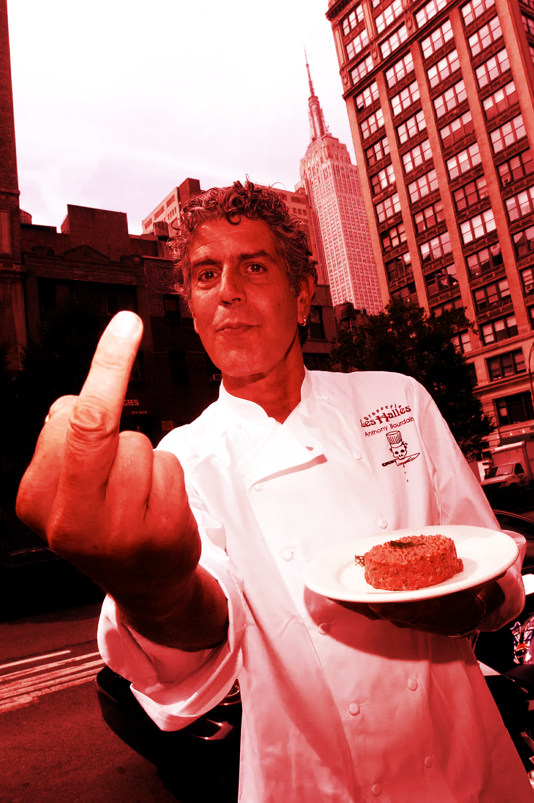

In Designer as Author I argued that we are insecure about the value of our work. We are envious of the power, social position and cachet that artists and authors seem to command. By declaring ourselves “design- er/authors” we hope to garner similar respect. Our deep-seated anxiety has motivated a movement in design that values origination of content over manipulation of content.
Designer as Author was an attempt to recuperate the act of design itself as essentially linguistic—a vibrant, evocative language. However, it has often been read as a call for designers to generate content: in effect, to become designers and authors, not designers as authors. While I am all for more authors, that was not quite the point I wanted to make.
 The problem is one of content. The misconception is that without deep content, design is reduced to pure style, a bag of dubious tricks. In graphic-design circles, form-follows- function is reconfigured as form-follows-content. If content is the source of form, always preceding it and imbuing it with meaning, form without content (as if that were even possible) is some kind of empty shell. The apotheosis of this notion, repeated ad nauseum (still!), is Beatrice Warde's famous Crystal Goblet metaphor, which asserts that design (the glass) should be a transparent vessel for content (the wine). Anyone who favored the ornate or the bejeweled was a knuckle-dragging oaf. Agitators on both sides of the ideological spectrum took up the debate: minimalists embraced it as a manifesto; maximalists decried it as aesthetic fascism. Neither camp questioned the basic, implicit premise: it's all about the wine. This false dichotomy has circulated for so long that we have started to believe it ourselves. It has become a central tenet of design education and the benchmark against which all design is judged. We seem to accept the fact that developing content is more essential than shaping it, that good content is the measure of good design.